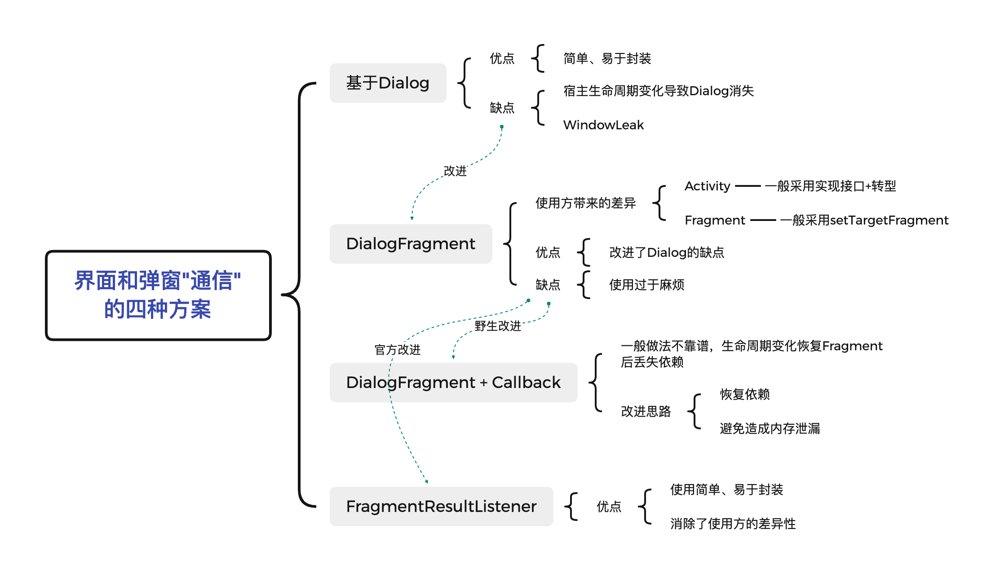

孔乙己：你可知道页面和弹窗“通信“的方式有四种？
演示用源码和内容思维导图于文末
这日孔乙己照常走进星巴克，点了份大杯拿铁，还要脱脂奶的， 虽然过上了小康生活，但毛病还是没有改，照例掏出一大把硬币，排出三十二枚。
就在等待时，听到旁边一桌人说道："好兄弟，别摸鱼了，今天我请你喝咖啡，这个弹窗功能可务必要加好，不能出bug啊"。"呵呵，一个弹窗、还能难道我伟大的Android工程师？" 手指孔乙己说道："在他拿到咖啡前，我就能写好，bug不存在的！"
孔乙己看热闹不嫌事大，凑上前去，"哟嚯，小兄弟年纪不大口气不小，你可知道Android中界面使用弹窗，有四种写法？今天就让我孔乙己来和你说道说道"
众人哂笑："这孔乙己还真是孔乙己，茴香豆的茴字你是不是也要说道说道？"
孔乙己大怒道："这可不是茴香豆的茴字！这可是必备的基础知识啊，有些你今天用不着了，但遇上祖传代码呢？"
为了说的清晰些，我们约定："在界面点击按钮触发弹窗、弹窗中可输入文字，确定后将输入的内容显示在按钮上方的文本框中。让场景更加真实些，界面包含Activity界面和Fragment界面两种主流情况"。
孔乙己准备先做点准备工作：封装两种情况获取Context、绑定View、绑定事件
诸位可以忽略下面这段模板代码，仅仅是担心后续内容中的代码引起疑惑，可以直接跳跃到 最久远的做法: Dialog
sealed class Host {
abstract val context: Context
abstract fun <T : View> view(@IdRes id: Int): T
abstract fun launchFragment(fragment: DialogFragment)
abstract fun launchFragment2(fragment: DialogFragment, listener: FragmentResultListener)
class ActivityHost(private val activity: AppCompatActivity) : Host() {
override val context: Context
get() = activity
override fun <T : View> view(id: Int): T {
return activity.findViewById(id)
}
override fun launchFragment(fragment: DialogFragment) {
//下文展开
}
override fun launchFragment2(fragment: DialogFragment, listener: FragmentResultListener) {
//下文展开
}
}
class FragmentHost(private val fragment: Fragment) : Host() {
override val context: Context
get() = fragment.requireContext()
override fun <T : View> view(id: Int): T {
return fragment.requireView().findViewById(id)
}
override fun launchFragment(fragment: DialogFragment) {
//下文展开
}
override fun launchFragment2(fragment: DialogFragment, listener: FragmentResultListener) {
//下文展开
}
}
}
class Demo(val host: Host) {
interface OnResultListener {
fun onResult(text: String?)
}
companion object {
const val BUNDLE_STR_INPUT = "BUNDLE_STR_INPUT"
const val BUNDLE_BOOL_FROM_FG = "BUNDLE_BOOL_FROM_FG"
const val KEY_INPUT = "KEY_INPUT"
}
fun onStart() {
val btnDemo1: Button = host.view(R.id.btn1)
val btnDemo2: Button = host.view(R.id.btn2)
val btnDemo3: Button = host.view(R.id.btn3)
val btnDemo4: Button = host.view(R.id.btn4)
btnDemo1.setOnClickListener { demo1() }
btnDemo2.setOnClickListener { demo2() }
btnDemo3.setOnClickListener { demo3() }
btnDemo4.setOnClickListener { demo4() }
}
fun setText(text: String?) {
host.view<TextView>(R.id.tv_result).text = text
}
private fun demo1() {
}
private fun demo2() {
}
private fun demo3() {
}
private fun demo4() {
}
}
很轻易的，孔乙己完成了准备工作
最久远的做法: Dialog
还能看到这种做法的，那项目一定是历史悠久了。
做法
孔乙己继续说道："这种做法只需要拿到 Context 和 业务回调函数即可"
private fun demo1() {
val view = LayoutInflater.from(host.context).inflate(R.layout.view_input, null)
val dialog = AlertDialog.Builder(host.context)
.setView(view)
.setPositiveButton("OK") { dialog, _ ->
dialog?.dismiss()
setText(view.findViewById<EditText>(R.id.et_input)?.text?.toString())
}
.setNegativeButton("cancel") { dialog, _ -> dialog?.dismiss() }
.create()
dialog.show()
}
优点
很显然，它的优点很明显：简单、易于封装，诸位可以很容易的按照产品和UI的需求、剥离弹窗UI部分，从而保持业务部分 "纯粹"， 既能够 高效复用 ，也 避免 UI变更时改动业务类。
缺点
孔乙己转头问小兄弟："你可知道它的缺点吗？"，小兄弟默默不言， 孔乙己也不去管他，笑道："你把弹窗弹出来、再转一下屏幕看。或者把不保留活动打开，退后台再进。哈哈，是不是弹窗没了？"
再仔细看看，是不是还发生了 WindowLeak？
这个设计需要开发者额外维护生命周期变化所导致的问题。
不操心生命周期变化的方式：DialogFragment + setTargetFragment
孔乙己继续说道："Google知道这个设计不好，于是再Fragment系统中增加弹窗交互系统，想要利用Fragment在宿主生命周期变化后的恢复特性来解决这一问题"
做法
孔乙己又做了点准备工作，和前文的Dialog保持了功能一致：
sealed class DemoDialogFragment : DialogFragment() {
override fun onCreateDialog(savedInstanceState: Bundle?): Dialog {
val view = LayoutInflater.from(requireContext()).inflate(R.layout.view_input, null)
return AlertDialog.Builder(requireContext())
.setView(view)
.setPositiveButton("OK") { _, _ ->
dismissAllowingStateLoss()
onPositive(view.findViewById<EditText>(R.id.et_input)?.text?.toString())
}
.setNegativeButton("Cancel") { _, _ -> dismissAllowingStateLoss() }
.create()
}
protected abstract fun onPositive(text: String?)
}
孔乙己又按照两种界面形式区分了结果处理：
- Fragment来源则重新获得 targetFragment，约定调用onActivityResult进行回调
- Activity来源则约定Activity必须实现回调接口，获取宿主Activity后进行转型继而进行回调
class Demo2 : DemoDialogFragment() {
private var fromFg = false
override fun onCreate(savedInstanceState: Bundle?) {
super.onCreate(savedInstanceState)
fromFg = arguments?.getBoolean(BUNDLE_BOOL_FROM_FG) ?: false
}
override fun onPositive(text: String?) {
val intent = Intent()
intent.putExtras(Bundle().apply {
putString(BUNDLE_STR_INPUT, text)
})
if (fromFg) {
targetFragment?.onActivityResult(targetRequestCode, Activity.RESULT_OK, intent)
} else {
(requireActivity() as OnResultListener).onResult(text)
}
}
}
编写好 "启动" 方式
class ActivityHost(private val activity: AppCompatActivity) : Host() {
override fun launchFragment(fragment: DialogFragment) {
val arg = fragment.arguments ?: Bundle()
arg.putBoolean(BUNDLE_BOOL_FROM_FG, false)
fragment.arguments = arg
fragment.show(activity.supportFragmentManager, fragment.javaClass.name)
}
}
class FragmentHost(private val fragment: Fragment) : Host() {
override fun launchFragment(fragment: DialogFragment) {
val arg = fragment.arguments ?: Bundle()
arg.putBoolean(BUNDLE_BOOL_FROM_FG, true)
fragment.arguments = arg
fragment.setTargetFragment(this.fragment, 2)
//使用 fragment.requireActivity().supportFragmentManager 亦可
fragment.show(this.fragment.requireFragmentManager(), fragment.javaClass.name)
}
}
略去回调处理逻辑，简单的取数据和方法调用
private fun demo2() {
host.launchFragment(DemoDialogFragment.Demo2())
}
优点
小兄弟拿起demo进行了把玩，不错不错，这个没bug了。
缺点
孔乙己又是邪魅一笑，你不觉得这 代码太TM多 了吗？使用很不方便啊，Activity和Fragment还有使用差异。
小兄弟试探的答道："改造下，全部干成回调函数？那不就基本统一了吗？"
孔乙己又是邪魅一笑，不错、这就是第三种做法了，你来试一试。
不靠谱的 DialogFragment + Callback
孔乙己在一旁看着小兄弟飞快的编码，左手一个Callback，右手一个invoke Callback，三下五除二就改完了
做法
class Demo3 : DemoDialogFragment() {
var listener: OnResultListener? = null
override fun onPositive(text: String?) {
listener?.onResult(text) ?: Log.e("DEMO3", "listener is null!")
}
}
private fun demo3() {
host.launchFragment(DemoDialogFragment.Demo3().apply {
this.listener = object : OnResultListener {
override fun onResult(text: String?) {
setText(text)
}
}
})
}
优点
小兄弟对孔乙己说："孔兄，你看，它又变得 很简单、很容易封装 了，他们再改UI我也不担心改业务代码了，你看生命周期变化的时候它也不消失了！"
缺点
孔乙己邪魅一笑，"小兄弟别高兴的太早，转完了屏幕测一下功能还正常不？"
小兄弟闻言一试，大呼："回调函数怎么没了！可有解救之法？"
孔乙己说道："自然是有的，先想想为什么会这样？重新出现的弹窗是系统在处理宿主生命周期变化时为你恢复的，但并不保证所有的引用都恢复"
破解自然是有办法的，让Callback被恢复，或者让Callback不需要被恢复也能得到正确的对象即可，但需要注意不能带来宿主的内存泄漏问题。
改造自然是需要花费很多精力的，但是现在有福了。
拥抱新变化：FragmentResultListener
孔乙己说道："Google自然是知道方法二中的诸多问题，终于是提供了大一统解决方案"
先把AndroidX-Appcompat升级到 1.3.0
implementation 'androidx.appcompat:appcompat:1.3.0'
我们将会拥有新API：
FragmentManager#setFragmentResultListener(key:String, lifecycleOwner:LifecycleOwner, listener:FragmentResultListener)
FragmentManager#setFragmentResult(key:String, bundle:Bundle)
做法
孔乙己使用新API进行了修改
class ActivityHost(private val activity: AppCompatActivity) : Host() {
//...
override fun launchFragment2(fragment: DialogFragment, listener: FragmentResultListener) {
activity.supportFragmentManager.setFragmentResultListener(Demo.KEY_INPUT, activity, listener)
fragment.show(activity.supportFragmentManager, fragment.javaClass.name)
}
}
class FragmentHost(private val fragment: Fragment) : Host() {
//...
override fun launchFragment2(fragment: DialogFragment, listener: FragmentResultListener) {
this.fragment.parentFragmentManager.setFragmentResultListener(Demo.KEY_INPUT, this.fragment, listener)
fragment.show(this.fragment.parentFragmentManager, fragment.javaClass.name)
}
}
重新呼出弹窗后
private fun demo4() {
host.launchFragment2(fragment = DemoDialogFragment.Demo4()) { requestKey, result ->
if (requestKey != KEY_INPUT) return@launchFragment2
setText(result.getString(BUNDLE_STR_INPUT))
}
}
非常完美。此时店员的声音飘来："孔乙己先生，您的大杯脱脂奶拿铁好了"。
孔乙己对众人说道："我的咖啡好了，要走了，有这种官方方案，第三种方法便不再优化了，至于此方案是否有缺点，诸位还请阅读源码，江湖再见"。
附
内容导图
